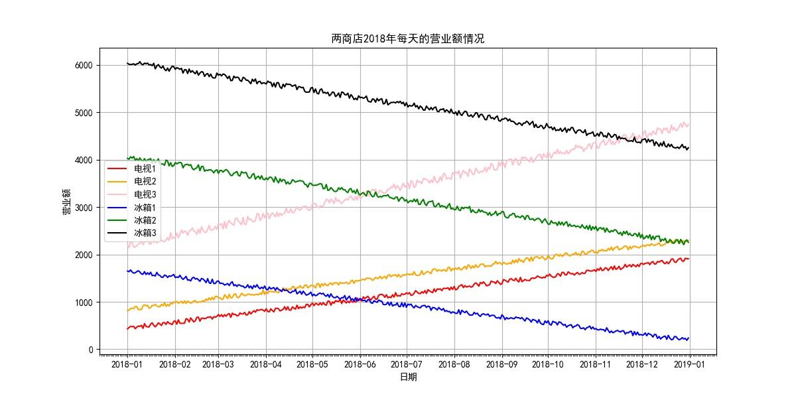
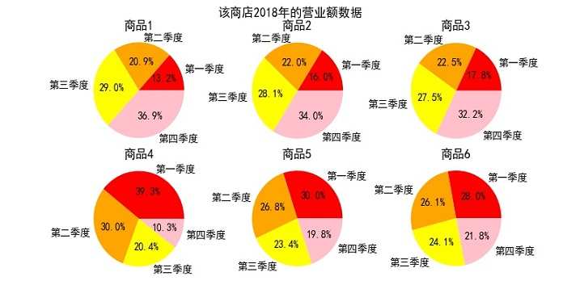

网站首页
作品展
资源分享
动态分享
个人简介
留言板
文件上传及拖放 在右边个人头像位置
右边头像位置实现文件上传和更换显示图片，将鼠标移动到头像图片位置，选择更换头像按钮，选择文件中图片确定，点击更换，实现头像图片更换。拖放图片是想拖放。
canvas绘图 点击左边任意标题和右边热文排行标题 页面跳转详情页面
首页页面导航栏下面canvas动画、详情页面皮卡丘canvas绘图、动态页面右上角时钟canvas动画
表单收集元素 在留言板下面email框
EMAIL框实现
本地存储 在留言板最下面搜索姓名得到姓名、EMAIL和时间
还可以实现回复功能 得到姓名、内容和时间信息。

CSS翻转 在动态分享的每张图片
还有作品展里 三维动画类的视频里悬停实现放大10%的效果！

基于Python扩展模块！
该模块主要是针对大数据分析而制作！使用该模块后即可实现每页显示多少条数据的控制！分析数据，产生饼状图数据报表！
基于PhotoShop制作！
该模块主要是针对当前版本aftereffect和photoshop而制作，使用该模块后即可实现每页显示多少条数据的控制！
基于laypage的layui扩展模块（pagesize.js）！
该模块主要是针对当前版本laypage没有页容量控制功能而制作，使用该模块后即可实现每页显示多少条数据的控制！本人原创，但是可能有可能只对本人的分页写法有用！
基于PhotoShop制作！
该模块主要是针对当前版本aftereffect和photoshop而制作，使用该模块后即可实现每页显示多少条数据的控制！
LLLsy
软件工程专业新媒体方向在校仙女
福建 - 福州
热文排行
制作一个小提琴模型 - 3d Max建模
面试官问我网络协议，怎么办？
常用正则表达式
小小的Python编程故事
什么是二分查找？
C#基础知识回顾-扩展方法
java进阶（一）
如何制作timo模型 -3d Max建模
最近分享
Canvas
3d Max 建模
时光轴
图片轮播
一路走来
2019年05月15日
H5多媒体播放
2019年03月10日
3d Max 建模 - timo蜜蜂皮肤
2019年03月09日
Dreamweaver框架操作
2019年02月25日
unity3d-新增攻击状态
后台记录
2019年03月16日
分页新增页容量控制
2019年03月12日
新增管家提醒功能
2019年03月10日
新增Win7快捷菜单
友情链接
QQ:33355577@qq.com
网站首页
文章专栏
资源分享
点点滴滴
关于本站